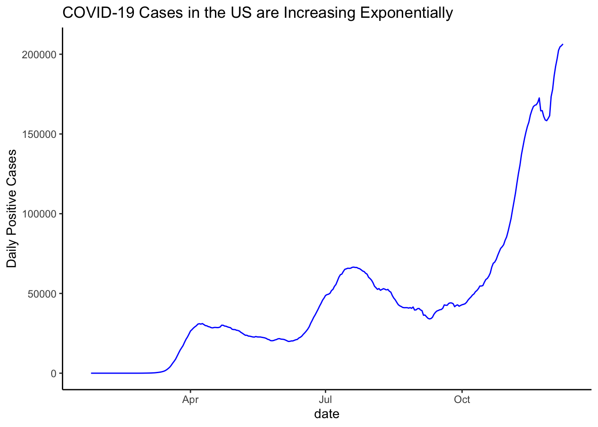

Chapter 7 Conclusion
2020 has been the year of significant change in everyone’s life forever to be written down as the year of COVID-19, but will there be more to come? Throughout this project we aimed to answer a few key questions and discovered some more interesting problems in the process. Below is a refresher of those questions and our conclusions from our results:
7.1 Initial Questions
What are some major COVID-19 patterns (cases and deaths) in the US, in relation to major domestic events?
In our analysis we noticed some alarming patterns and confirmed our suspicions that major holidays seemed to have an effect on the increasing the spread of COVID-19. The majority of states saw a rise of positive cases following Memorial Day weekend. In addition, we saw significant upticks following the protests against police brutality and Thanksgiving. However, this only paints one side of the story. Further analysis showed that positive cases were visibly correlated with the number of tests. This result, in fact, shows that the rise due to holidays seems to be just blips in the grand scheme of COVID-19 spread in the US. Moreover, it seems like we are hitting the exponential rise portion of the pandemics growth. As discussed earlier, the United States has had an upward trend until October, followed by an exponential increase similar to that of Illinois. Almost every state regardless of their performance in the summer months has exploded exponentially in the last two months. Below is the national trend with 7-day average:

What are some major COVID-19 Patterns (cases and deaths) when stratified by states/regions, and if necessary, specific counties of the state?
We stratified states based on the magnitude of tests and relative to their population and found that the “high” states, although usually performing worse in number of cases, did not trend that differently from “medium”, and “low” states. This observation confirms the final result from our previous question that regardless of seasonality, holidays, or individual state performance, the US is heading towards the and exponential trend in terms of spread of COVID-19.
What are some patterns that can signal a major upcoming wave? (e.g. if we see a steady growth in cases/deaths for x consecutive days, does that tell us a bigger picture about the state of COVID-19 in the US or a specific state?)
We found certain patterns within the data of rise and falls, but could not conclusively discern a reason for the trends. Some of the trends were due to data reporting issues and when we smoothed out for the trends by taking the 7-day average, some of those disappeared. Again, we initially hypothesized that major events in the United States led to increases to COVID-19, although true in its locality, does not detract from the exponential growth we are seeing today.
7.2 Additional Insight
In our work we also tried to attribute local policy changes in regards to COVID-19. Laws were extremely strict initially in March. As the hysteria died, people across the US began to lax their weariness in regards to danger and spread of COVID-19. This can also be reflected in local laws. Phased approaches of openings were announced and laws began to relax across the board. Potentially, the initial fear and stronger laws could have led to the steadiness of the summer spread. However, the relaxed laws and the normalization of COVID-19 in our lives have led to a surge in cases, which we see today. Below is an example of NY law changes overtime. The laxing of restrictions in the summer months are clearly reflected in the timeline (https://en.wikipedia.org/wiki/COVID-19_pandemic_in_New_York_(state)):
| Date | Action Taken |
|---|---|
| March 7, 2020 | State of emergency declared. |
| March 9, 2020 | State began producing its own brand of hand sanitizer. |
| March 10, 2020 | Governor Cuomo orders a coronavirus “containment zone” in New Rochelle, Westchester County, NY.[65] |
| March 12, 2020 | All gatherings of less than 500 people ordered to cut capacity by 50%. All gatherings of more than 500 people ordered to cancel. |
| March 12, 2020 | All SUNY campuses ordered to close within a week, and then shift to online for the remainder of the semester. |
| March 15, 2020 | All New York City schools ordered to close until April 20. |
| March 16, 2020 | Cuomo coordinates with his counterparts in New Jersey and Connecticut to formulate uniform policies for shutdowns.[66] |
| March 20, 2020 | State-wide stay-at-home order declared. All non-essential businesses ordered to close. All non-essential gatherings canceled/postponed.[66] |
| March 25, 2020 | Advisory issued ordering nursing homes to admit patients who test positive for the coronavirus and to not allow testing of prospective nursing home patients. This order was revoked on May 10. |
| March 27, 2020 | All schools statewide ordered to remain closed until April 15. |
| March 28, 2020 | All non-essential construction sites ordered to shut down. |
| April 6, 2020 | Statewide stay-at-home order and school closures extended to April 29. |
| April 9, 2020 | List of businesses deemed essential expanded. |
| April 15, 2020 | All state residents ordered to wear face masks/coverings in public places where social distancing is not possible. |
| April 16, 2020 | Statewide stay-at-home order and school closures extended to May 15. |
| May 1, 2020 | All schools and universities ordered to remain closed for the remainder of the academic year. |
| May 7, 2020 | Statewide four-phase reopening plan is first announced. |
| May 14, 2020 | Statewide state of emergency extended to June 13. |
| May 15, 2020 | Phase 1 of reopening allowed for counties that met qualifications. Five counties met qualifications and began reopening on this date. |
| May 15, 2020 | Drive-in theaters, landscaping/gardening businesses allowed to reopen state-wide (regardless of Phase 1 qualifications). |
| May 23, 2020 | Gatherings of up to ten people allowed as long as social distancing is practiced. |
| June 8, 2020 | New York City meets conditions for Phase 1, allowing the reopening of construction, manufacturing, agriculture, forestry, fishing, and select retail businesses that can offer curbside pickup. |
| June 15, 2020 | Four-phase reopening plan is modified to allow non-essential gatherings of 25 people upon entry of Phase 3, and 50 people upon entry of Phase 4. |
| June 22, 2020 | New York City meets conditions for Phase 2, allowing the reopening of outdoor dining at restaurants, hair salons and barber shops, offices, real estate firms, in-store retail, vehicle sales, retail rental, repair services, cleaning services, and commercial building management businesses. |
| July 10, 2020 | Malls allowed to open at 25% capacity for regions in Phase 4, with all patrons required to wear masks. |
| July 16, 2020 | New restrictions on bars/restaurants only allowing alcohol to be served only to people ordering food. |
| August 7, 2020 | Schools allowed to open in-person in the fall if certain conditions are met. |
| August 19, 2020 | Ban on ticketed music events at bars and restaurants. |
| October 1, 2020 | Exposure notification apps are added to notify users of potential exposure. |
| October 1, 2020 | The previous ban on ticketed events at bars and restaurants is ruled unconstitutional. |
| October 6, 2020 | Micro-cluster strategy is introduced, with the first micro-clusters being parts of Brooklyn and Queens. |
| November 12, 2020 | Bars, gyms, and any other business with a liquor license must close by 10 p.m. (restaurants as well, except for curbside pickup). Household gatherings limited to ten people. |
| November 25, 2020 | Previous restrictions on capacity through the micro-cluster strategy for places of worship is ruled unconstitutional. |
| December 8, 2020 | Hospital bed capacity statewide is demaded to be upgraded by 25 percent. |
7.3 Future Work and Potential Developments
Although our project is depicting a gloomy outlook for the future of the US, we have identified future developments that can potentially stem the tide and control the the spread of COVID-19. Pfizer has been approved for distribution of the COVID-19 vaccine and expects to have 50 million doses available by the end of 2020. This is a great news and can potentially influence the trend. At the same time, we understand that widespread distribution and adoption are still slow processes. With this in mind, the exponential trend will still continue for the foreseeable future. Once the vaccine becomes more accessible to the everyday person, we can then monitor the trends and see how effective the vaccine are. As is the case with new drugs, the effectiveness is still yet to be determined.
7.4 Final Words
In concluding our project, we hope that you gained a better understanding of the spread of COVID-19 and urgency of the situation. Given the exponential growth in the recent months, we can see the effects of our behaviors and our local laws have consequences months later. We hope that you came away more informed about the situation.